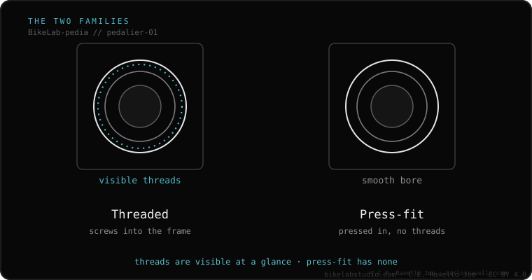
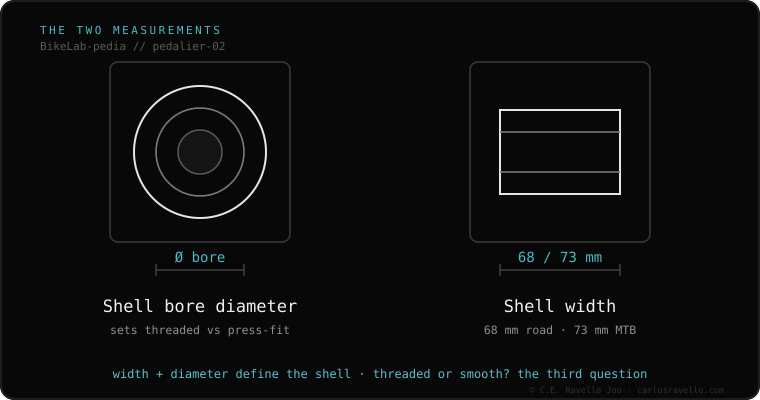

Your bottom bracket is one of two families: threaded (screws into the frame — BSA, T47) or press-fit (pressed in, no threads — BB30, PF30, BB86, BB92). To find yours, check whether the frame shell is threaded or smooth and measure its width: almost always 68 mm on road or 73 mm on MTB. Shortcut: alloy bikes are usually BSA; carbon road from 2010–2016 is usually BB30/PF30; modern high-end tends to T47.
The bottom bracket is the part where the pedals (cranks) spin. If the list of cryptic names overwhelms you, relax: below is the shortcut by bike type and year, the names in one line each, and how to confirm it by measuring.
Every bottom bracket is one of two families. Threaded: screws into the frame like a jar lid; the easiest to maintain and the one that almost never makes noise. Press-fit: pressed in, no threads; lighter, but the one that tends to creak over time.
How do you tell them apart? Look inside the frame shell: if you see threads (spiral lines), it's threaded. If it's smooth, it's press-fit. That already removes half the confusion.

Most people won't measure anything. If you know your bike type and its year, this is the most likely answer:
This is the most likely guess, not a certificate. Confirm it by measuring (below).
And the names Hollowtech II, DUB or GXP? Those are the crank spindle, not the frame shell — a different story, no confusion here.
To be 100% sure, look at the frame shell where the bottom bracket sits and answer two questions: the width (almost always 68 mm on road or 73 mm on MTB) and the inside (is it threaded or smooth?). With those two answers, the cryptic names are just combinations of those measurements — and you know what to buy.

If you bought a bottom bracket and it won't go in, or your bike creaks and you don't know why: send us the case. Real diagnosis, and if needed, we receive your components by courier in Trujillo. Message us on WhatsApp
Look at the frame shell: if it's threaded it's a threaded type (BSA or T47); if it's smooth it's press-fit (BB30, PF30, BB86 or BB92). Then measure the width: 68 mm on road or 73 mm on MTB. Those two answers identify it.
It's almost always a press-fit unit that lost its grease or seated poorly. You don't always need to replace it: cleaning, greasing the interface and re-torquing correctly fixes most cases.
For home maintenance and to avoid noise, yes. That's why the modern T47 standard (threaded) is replacing many press-fit systems on high-end bikes.
Sometimes, using adapters or specific bottom brackets (the SRAM DUB spindle fits almost any frame with the right bottom bracket). But not always: it depends on the width and diameter of your frame shell.
Glossary · what each standard is
Compatibility · what fits what